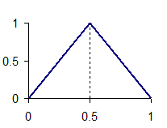
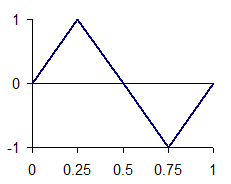

载荷变化会将应力或应变的静态变换为循环应力或应变时间历程，由此计算出耐久性结果。
载荷变化的定义如下：
静态解算方案子工况的应力或应变结果
半单位或完整单位周期函数定义一个周期
载荷缩放因子
平均应力
加载历史 F(t) 计算如下：
F(t) = S ∙ (a∙f(t) + σm)
其中：
S 是静态应力或应变
a 是比例因子
f(t) 是单位周期函数
σm 是平均应力
周期函数描述加载和卸载应力或应变时应力或应变历程的情形。支持以下周期模式类型：
半单位周期
完整单位周期
在半单位周期函数中，结构最初处于松弛或无应力状态。对结构加载到最大应力，然后卸载并退回到无应力状态。
|
 |
在完整单位周期函数中，结构最初处于松弛状态或无应力位置。然后将它加载到最大应力，接着卸载到无应力状态，之后重新加载到最大负应力，最后重新卸载到无应力状态。
|
 |
比例因子用于线性缩放应力结果。使用比例因子有助于避免为不同加载值执行重复求解。
将平均应力偏置应用于载荷变化，可修改周期函数的无应力状态。当结构处于卸载状态而不是无应力状态时，对其施加的是平均应力。